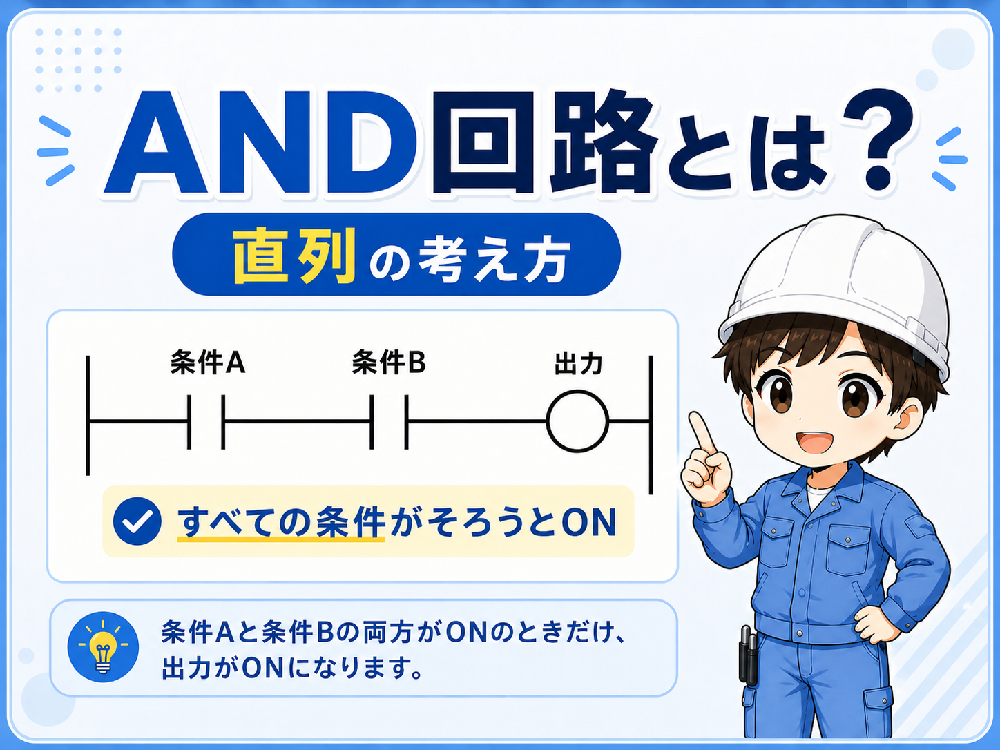
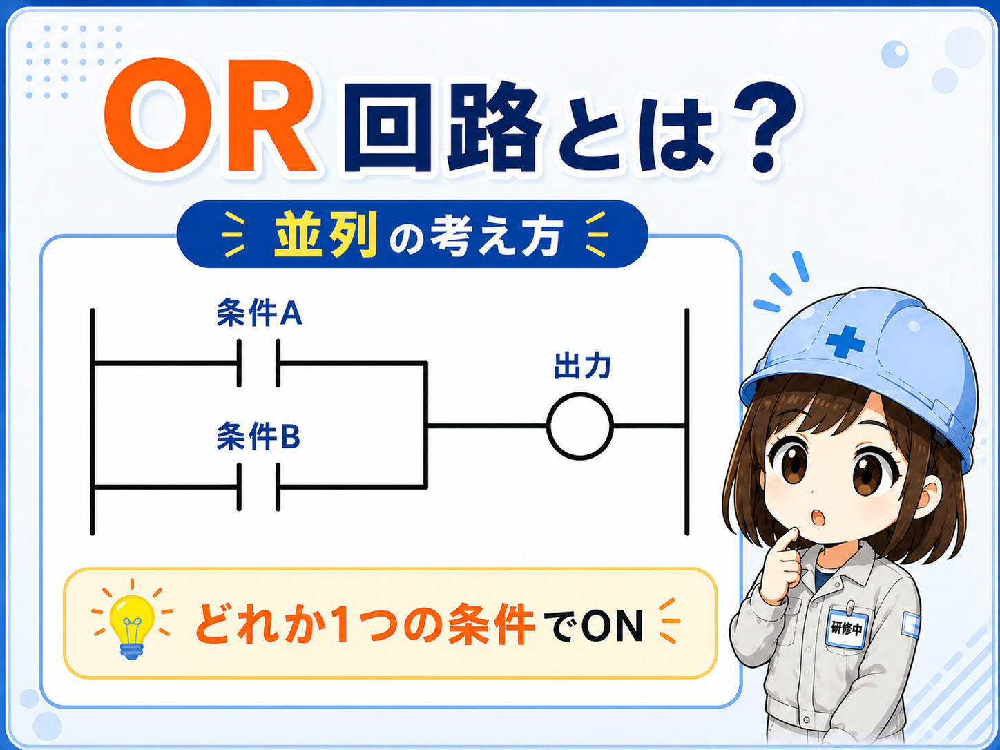
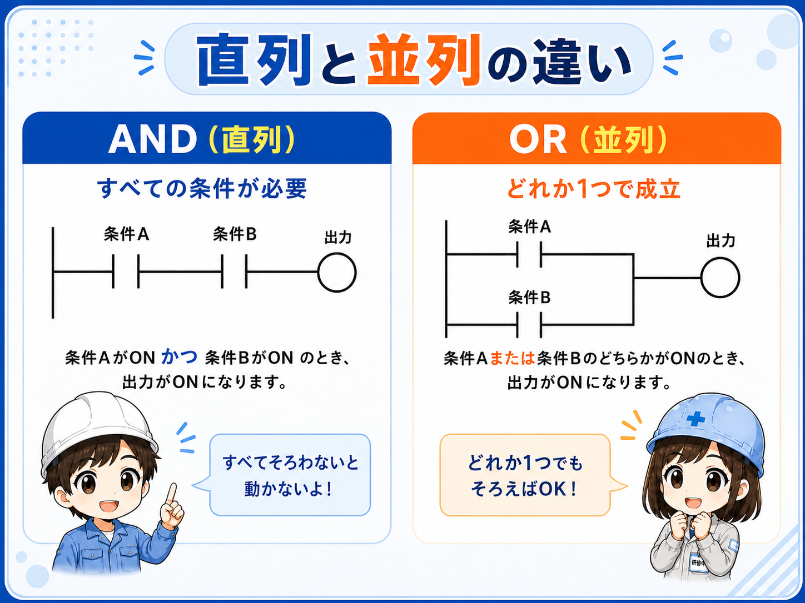
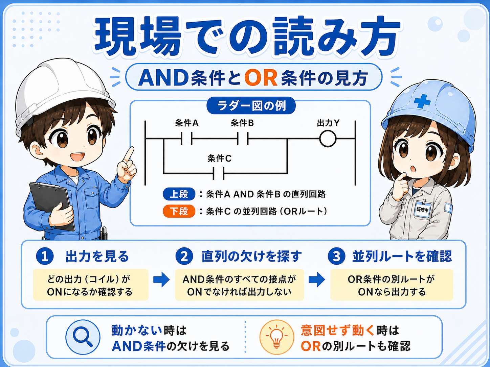

1. 先に結論
ラダーのAND・OR回路は、条件の組み合わせを読むための基本です。 直列に並んだ条件は「すべて成立したら次へ進む」、並列に分かれた条件は「どれか1つ成立したら次へ進む」と考えると理解しやすくなります。
ただし、実際のPLCプログラムでは、接点の種類、否定条件、内部リレー、インターロック、自己保持などが組み合わさります。 この記事では、まずラダーを読む入口として、ANDとORの基本イメージに絞って整理します。
直列はAND、並列はORとして入口をつかむ
「全部そろったら動く」がAND、「どれか1つで動く」がORです。 この考え方を持っておくと、起動条件や許可条件を追う時に迷いにくくなります。

先輩ラダーの直列と並列は、最初は電気図面よりも「条件の組み合わせ」として見ると分かりやすいよ。

新人直列は全部必要、並列はどれか1つでOK、という入口から見ればいいんですね。
2. AND条件とは？全部そろったら成立する考え方
AND条件は、複数の条件がすべて成立した時に次へ進む考え方です。 ラダーでは、複数の接点が直列に並んでいる形として見ることが多いです。
たとえば、「運転ボタンがON」「非常停止が解除」「扉が閉じている」の3つがそろった時だけモーターを動かしたい場合、考え方としてはAND条件になります。

全部必要
1つでも条件が欠けると、後ろの出力条件には進みにくいと考えます。
許可条件に多い
自動運転許可、安全条件、原点確認、扉閉確認などでよく出ます。
3. OR条件とは？どれか1つで成立する考え方
OR条件は、複数の条件のうち、どれか1つが成立すれば次へ進む考え方です。 ラダーでは、接点が並列に分かれている形として見ることが多いです。
たとえば、「手動ボタンでも動かす」「自動条件でも動かす」のように、複数の入口がある時はOR条件として整理できます。

複数の入口をまとめる時に使う
手動運転、自動運転、別位置からの起動信号など、どれか1つの条件で同じ結果へ進めたい時にORの考え方が出てきます。
4. 直列と並列の違いを表で整理
ANDとORは、言葉だけで覚えるよりも、直列・並列の見た目とセットで考えると覚えやすくなります。 ラダーを読む時は、接点が縦に分岐しているのか、横に続いているのかを落ち着いて見ます。

| 見た目 | 考え方 | 成立する条件 | 現場での例 |
|---|---|---|---|
| 直列 | AND条件 | すべての条件が成立する | 起動ボタンON、停止条件なし、安全扉閉などが全部そろう |
| 並列 | OR条件 | どれか1つの条件が成立する | 手動ボタンまたは自動条件、どちらかで動作許可する |
5. 現場では「どの条件で止まっているか」を追う
ラダーを現場で見る時は、AND条件なら「どの条件が欠けているか」、OR条件なら「どの入口から成立しているか」を確認します。 入力が入っているのに動かない時は、途中のAND条件のどこかで止まっていることがあります。
反対に、思わぬタイミングで動く時は、並列の別ルートから条件が成立している可能性もあります。 そのため、1本の線だけでなく、分岐している条件も含めて見ることが大切です。

- まず出力条件を見る：どのYやMを動かしたいのかを確認します。
- AND条件を確認する：直列に並ぶ条件のうち、OFFになっているものがないか見ます。
- OR条件を確認する：並列ルートのどこから成立しているか見ます。
- コメントと図面を合わせる：デバイス番号だけでなく、何の信号かを確認します。
6. よくある勘違い
AND・ORの基本を知っていても、ラダーでは接点の種類や否定条件が入ると混乱しやすくなります。 まずは「その条件が成立している時に導通するのか」を落ち着いて見ることが大切です。
並列なら全部ONではない
並列は、どれか1つのルートが成立すればよい場合があります。全部ONが必要とは限りません。
b接点で逆になることがある
停止ボタンや異常条件では、接点の考え方が逆に見えることがあります。接点の種類も確認します。
安全条件は自己判断しない
安全扉、非常停止、安全リレーなどに関わる部分は、ラダーだけで判断せず仕様書・図面・社内ルールを確認します。
見た目だけで断定しない
分岐や内部リレーが多い場合は、クロスリファレンスやコメントを使って確認します。
安全回路の設計判断には使わない
この記事はラダーを読むための基礎整理です。 安全回路、非常停止、インターロック設計は、規格、仕様書、メーカー資料、社内基準に従って判断してください。
7. まとめ
ラダーのAND・OR回路は、条件の組み合わせを読むための基本です。 直列は全部そろう条件、並列はどれか1つで成立する条件として入口をつかむと、ラダーを追いやすくなります。
- 直列はAND条件として考えると分かりやすい
- 並列はOR条件として考えると分かりやすい
- AND条件では、どの条件が欠けているかを見る
- OR条件では、どのルートから成立しているかを見る
- 安全条件や実機動作は、図面・仕様書・社内ルールと合わせて確認する